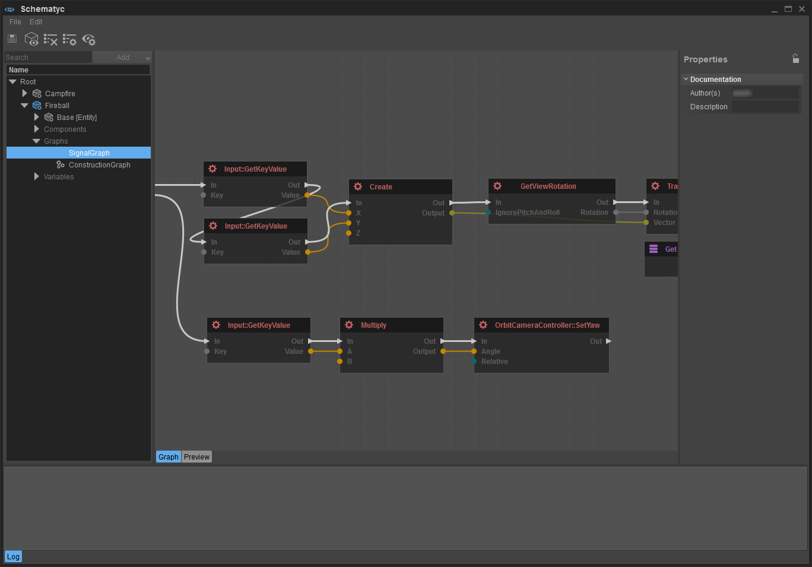
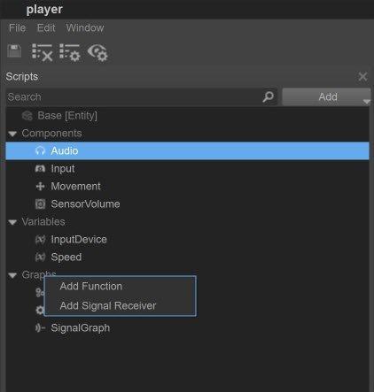
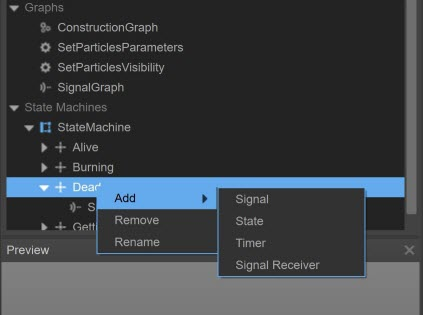

Эта функция все еще находится в стадии бета-тестирования и может постоянно меняться. Мы рекомендуем вам использовать его в тестовых проектах и оставить нам свои отзывы.
Однако, DO NOT используйте его в производстве, где он создает зависимости! Всегда создавайте резервные копии своих проектов, чтобы иметь возможность вернуться к предыдущей версии.
Обзор
Основная цель Schematyc — изменить способ создания игровых систем в Crytek, предоставив дизайнерам возможность создавать новые объекты многократного использования из набора строительных блоков, предоставленных программистами. На первый взгляд редактор немного похож на Flow Graph, но эти две системы были созданы с совершенно разными целями. В то время как потоковые графы отлично подходят для создания сценариев уровней, Schematyc предназначен для обеспечения ограниченного контроля над объектами на этих уровнях.
Инструменты визуального написания сценариев позволяют создавать сценарии собственной логики. Конечные автоматы помогают разбить и структурировать логику, упрощая отладку объектов и упрощая процесс сетевой синхронизации. Детерминизм и уменьшенная задержка позволяют вывести новые игровые системы за пределы стадии прототипирования без необходимости переписывать их на C++.
Контекст – король Schematyc, и наша цель – только Предоставляйте пользователям соответствующую информацию, чтобы UI не становился слишком загроможденным и перегруженным.

Дополнительную информацию о редакторе Schematyc можно найти здесь: Редактор схем
Основные понятия
Основные понятия, которые вам необходимо понять перед использованием Schematyc:
- Классы - https://en.wikipedia.org/wiki/Class_(computer_programming) — Класс описывает объект и включает в себя все данные и логику, связанные с этим объектом.
- Компоненты — Компоненты — это строительные блоки, которые определяют, какие функции доступны объекту. Если вы хотите загрузить геометрию, вам нужно будет добавить компонент геометрии к вашему объекту, чтобы прочитать входные данные от контроллера, вы должны сначала добавить компонент ввода и так далее.
- Переменные - https://en.wikipedia.org/wiki/Variable_(computer_science) - Переменные хранят информацию и существуют столько же, сколько long, пока существует объект или состояние, которому они принадлежат. Создавая переменную public, вы разрешаете другим системам доступ к этой переменной, например. когда вы размещаете объект Schematyc на уровне, вы можете редактировать его переменные public на главной панели свойств.
- Конечные автоматы - http://en.wikipedia.org/wiki/Finite-state_machine — В Schematyc состояния могут быть структурированы иерархически, и все дочерние элементы определенного состояния наследуют поведение этого состояния, что позволяет им совместно использовать как функциональность, так и переходы.
- Сигналы — Сигналы используются для связи между объектами и их состояниями, поэтому, например, вы можете создать сигнал повреждения, чтобы пересылать повреждения от одного объекта к другому. Сигналы также можно использовать для отправки данных, поэтому в примере с сигналом о повреждении вы можете добавить две переменные: тип урона и сумму урона, чтобы указать наносимый урон.
- Функции - https://en.wikipedia.org/wiki/Subroutine - Функции в Schematyc аналогичны функциям в любом другом языке программирования; вы передаете входные данные, функция выполняет некоторую логику, затем вы возвращаете выходные данные.
- Перечисления - Если вы хотите перечислить конечный набор параметров со строковыми идентификаторами, вы используете перечисление.
Граф перехода
В дополнение к более традиционным логическим графам для визуальных сценариев Schematyc также представляет концепцию графа переходов. Здесь мы контролируем, как и когда вы переключаетесь из одного состояния в другое. Невозможно инициировать переходы откуда-либо еще, и хотя это может показаться не таким удобным, как просто возможность связать узел «переключения состояния», это значительно упрощает просмотр общей картины и отслеживание проблем, когда проекты становятся более сложными.
Низкая задержка, высокий детерминизм
Две самые большие проблемы, с которыми мы сталкиваемся при написании сценариев в Flow Graph, — это задержка и отсутствие детерминированности. Поскольку поток определяется для каждого узла на основе ввода/вывода, и программисты могут реализовывать новые узлы практически любым способом, трудно (иногда невозможно) предсказать порядок, в котором узлы будут вызываться и, что, возможно, более важно, когда узел будет вызываться. Эта проблема становится особенно неприятной при оценке переходов для конечного автомата, потому что, если вы не получаете немедленного ответа, вам придется отложить оценку до одного или двух кадров позже, к этому времени ранее оцененные условия могут перестать быть действительными.
Schematyc решает эти проблемы, создавая четкое различие между узлами, которые могут запускать скриптовую логику, и узлами, которые являются частью скриптовой логики. Поток выполнения должен быть определен явно, и любые узлы, не являющиеся частью пути выполнения, будут выделены серым цветом, чтобы указать, что они никогда не будут вызываться.
Объяснение схемных ресурсов
В Schematyc 5.4 мы представляем два типа ресурсов Schematyc.
Схематический объект
- Можно разместить на уровне
- Может использоваться в качестве основы для других объектов схемы.
- Доступ ко всему, что в базе отмечено как public, доступен.
- Может содержать следующий контент
- Компоненты
- Графики
- График строительства
- График сигнала
- Функциональный график
- Переменные
- Переменные
- Таймер
- Сигналы
- Государственная машина
- Штаты
Библиотека схем
- Невозможно разместить на уровне.
- Коллекция функций, перечислений и сигналов.
- Доступен для объектов Schematyc и библиотек Schematyc.
- Может содержать следующий контент
- Функциональные графики
- Перечисления
- Сигналы
Как создать ресурс Schematyc
Существует два способа создания ресурса Schematyc. Вы можете воспользоваться браузером ресурсов или сделать это в Schematyc.
Обозреватель активов
- Откройте Обозреватель активов
- Выберите каталог
- Щелкните правой кнопкой мыши на панели результатов поиска и выберите Новый
- Выберите объект схемы или библиотеку в зависимости от того, что вы хотите создать.
Редактор схем
- Перейти к Файл и выберите Новый
- Выберите объект схемы или библиотеку в зависимости от того, что вы хотите создать.
Как добавить контент в актив
Контент можно добавлять через Добавить меню прямо на Панель поиска. Его можно рассматривать как контекстное меню всего объекта, поэтому он добавляет новые элементы на верхний уровень объекта.
Дочерний контент можно добавить через контекстное меню элемента:
 |  |
Вступительное видео
Серию видеороликов о Schematic можно посмотреть на странице эта ссылка.